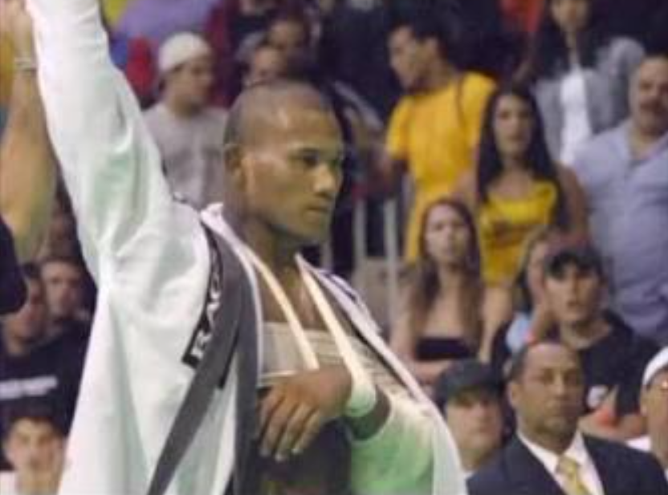

Ronaldo “Jacaré” Souza é um dos grandes nomes da história do jiu-jítsu brasileiro. Nascido em Vila Velha, Espírito Santo, começou a praticar jiu-jítsu ainda jovem e encontrou na modalidade uma oportunidade para desenvolver sua técnica e disciplina. Com o passar dos anos, ganhou destaque no cenário competitivo e passou a ser reconhecido por seu estilo de luta intenso e eficiente.
Jacaré se tornou conhecido principalmente pela força, pelo excelente jogo de chão e pela capacidade de controlar e finalizar seus adversários. Durante sua trajetória, treinou ao lado de grandes nomes do jiu-jítsu e fez parte de uma geração que ajudou a elevar o nível da modalidade no cenário internacional.
Com sua evolução, passou a competir nas principais competições de jiu-jítsu e grappling do mundo. Seu estilo agressivo e sua determinação dentro dos tatames fizeram dele um dos atletas mais respeitados de sua época, além de inspirarem muitos praticantes da modalidade.
Depois de construir uma carreira de destaque no jiu-jítsu, Ronaldo Jacaré também decidiu seguir carreira no MMA. A transição permitiu que ele levasse seu forte jogo de chão para outra modalidade, enfrentando grandes nomes do esporte e construindo uma trajetória importante também nas artes marciais mistas.
Ronaldo Jacaré possui um dos currículos mais importantes do jiu-jítsu competitivo. Entre seus principais feitos estão os títulos de Campeão Mundial da IBJJF na faixa-preta, Campeão Mundial do ADCC e Campeão Pan-Americano, além de diversas outras conquistas em grandes competições nacionais e internacionais. Seu domínio nas competições de jiu-jítsu e grappling fez com que fosse considerado um dos melhores atletas de sua geração.
Além do sucesso no jiu-jítsu, Jacaré também construiu uma carreira de destaque no MMA, competindo em grandes organizações e enfrentando alguns dos principais lutadores de sua época. Sua combinação de wrestling, jiu-jítsu e experiência competitiva fez dele um dos brasileiros mais respeitados nas artes marciais.